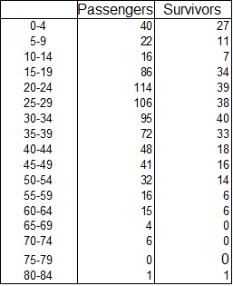
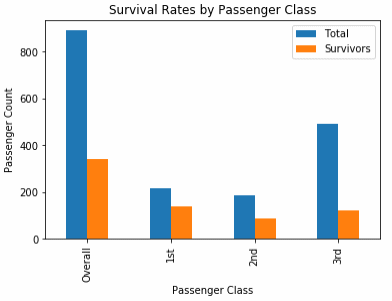
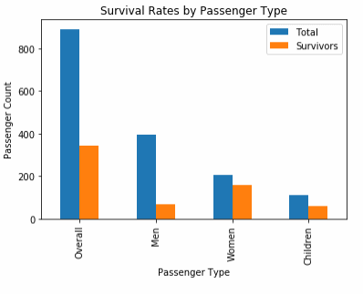
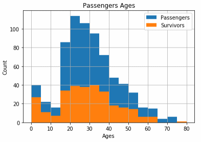
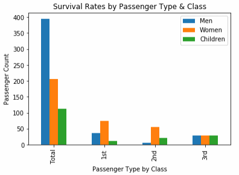
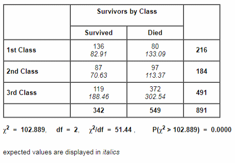
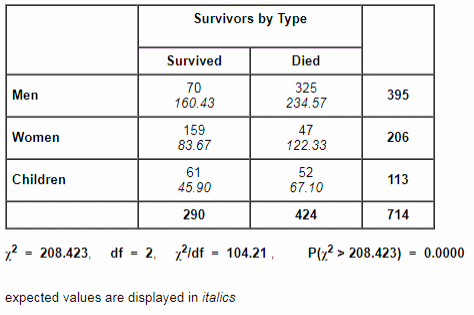

Question Phase
The dataset being analysed contains passenger data from the Titanic disaster. I've heard that it was rumoured that steerage class passengers were locked in their cabins, so it might be interesting to see what the survivorship ratio was by ticket class. I've also heard that because of the 'women and children first' rule, some men were mocked for getting into the lifeboats. It might be interesting to divide the survivors into three groups (men, women and children) and see what the survivorship ratios are for those groups. Next, I plan to divide the passengers by age; to divide the survivors into bins and see what the ratios were. Lastly, I'll combine the first two questions to see if there's any interesting data points to discover. So in summary, the questions I plan to ask are :
1. What are the survivorship ratios by passenger class?
2. What are the survivorship ratios for men, women, and children?
3. What are the survivorship ratios by age?
4. What are the survivorship ratios for men, women, and children, by passenger class?
Data Wrangling
The read_csv() function interprets dtypes, so there's no need to convert numeric types from strings. Examing the dataframe I noticed some inconsistencies in the data; not every passenger has a cabin attibute, for example, while others have several. This and many other columns are not needed for my analysis, so I dropped them from the table at this point to reduce memory use and hopefully speed processing.
I was left with one inconsistency; not every passenger has an age attribute. This isn't a problem for the first question, but is neccessary for the rest. It may be possible to classify some of these passengers using their title (e.g. Dr., Mrs, etc.), but it may be dangerous to assume that everyone with the title 'Mrs' is over the age of 18, or that nobody with the title 'Mr' is under 18. I think it's best to just exclude these passengers from the analysis. 176 passengers have no age attribute which works out at just under 20% of the 891 passengers in the dataset, so we should still have a representative sample. It's worth noting that approximately 1,317 passengers in total were on the Titanic and 492 survived. While the complete dataset represents more than two thirds of passengers, the sample with an age attribute represents ~54% of passengers, so should still be a representative sample, though error margins may be slightly higher.
Passengers without an age attribute are represented as “NaN”, so it's simple to drop these from the dataframes. Age attributes are stored as floats, with infants represented as decimal approximations. Rather than change to integers straight away, I'm opting to preserve the original data in the dataframes, and only convert to integers for plotting\analysis after the age data is extracted.
The dataset is relatively small, but I wanted to avoid creating too many copies\slices in memory. I created one dataframe (“passengers”) using the read_csv() function to hold all the passengers data. I could probably have extracted all the data I need by looping through this dataframe once, but it probably wouldn't have been very readable. I opted to create a slice called
“survivors” to store all surviving passengers. I thought it would also make sense to do the same for passengers with age attributes (“passengers_with_age”) and survivors with age attributes (“survivors_with_age”).
Later, in order to re-use code, I created frames for first, second and third class passengers with age attributes, and first, second and third class survivors with age attributes.
Exploring the Data
I first looked at the passengers and survivors dataframes to explore the first question. Using my count_classes() fuction, I counted the passenger and survivor numbers by class. I found out that 342 passengers out of 891 survived; about 38%. Out of 216 first class passengers, 136 survived; about 63%. For second class there was 87 survivors out of 184; about 47%. When we look at the third class passengers, only 119 out of 491 survived; about 24%.
I next used carried out a chi-square test for independence. The result (see Appendix B) was a large X2 value indicating a very high likelihood that survivorship was dependent on passenger class.
For the rest of the exploring, I used the sample dataframes that included an age attribute. I next used my count_types() function to count the number of male, female and children passengers and survivors. I used the convention that an child is anyone under the age of 18, though this may not have been the case at the time. The data suggests that this is likely to have not been the case, but I'm going to stick with it rather than pick some arbitrary number. Counting the types of passengers, we can see the survival rate for male passengers is about 18%. Women had the highest overall survival rate at around 77%. Children had around a 54% survival rate.
Carrying out a chi-square test for independence (see Appendix B) again gave a large X2 value indicating a very high likelihood that survivorship was dependent on passenger type.
Seperating the passengers and survivors into age bins gives us the table below :

Lastly I counted the passenger types in the frames for first, second and third class passengers, and first, second and third class survivors. The counts can be seen in Appendix A.
Drawing Conclusions
In exploring question one, it seems that for whatever reason, passenger class had a bearing on your chances of surviving. A 63% survival rate for first class passengers drops to 24% for third class passengers. In fact, a chi-square test for independence gives a probability of less that a hundreth of a percent that surviorship was not based on passenger class.

In exploring question two, it does seem to have been 'women and children first'. Women had the highest overall survival rate at ~77%; more than double the overall survival rate. Children were next at ~54%. The overall male survival rate was a little less than 18%. In fact, a chi-square test for independence again gives a probability of less that a hundreth of a percent that surviorship was not based on passenger type.

Exploring question three didn't yield many interesting statistics. It may be worth noting, though the numbers in these bins are small, that two bins ('65-69' and '70-74') have a 0% survival rate. This might have been expected with older passengers. Both bins are more than two deviations from the mean, but I'm not planning on doing further analysis at this time.
Exploring the last question made the differences between the classes starker. Children in third class had just a ~37% chance of surviving compared to greater than 91% for both first and second class. Third class females showed a similar contrast with a little less than 42% surviving compared to more than 90% of second class and more than 97% of first class. Exploring this question also showed the most surprising statistic; the survival rate of second class male passengers was just 6.82%. This is far below the overall survival rate and bucks most trends.
In conclusion, it seems that passenger class and passenger type had a very high influence on survivorship ratios. The dataset is incomplete, but if it is representative of the overall population, it seems highly likely that there is a relationship between these variables.
Communicate
The Titanic disaster claimed the lives of 825 of 1,317 passengers with an overall survival rate of around 37.4%. The dataset I worked with is incomplete; not all passengers are included, and some data (age data, for example) is missing for some of those passengers. The dataset contains 714 passenger entries with age data – approximately 54% of the total – so I'm assuming we have a represantative sample.

Age doesn't seem to have had much influence on a passenger's odds of survival, with both histograms following roughly the same shape. It can be noted that the survival rate for passengers over the age of 65 drops to near zero. Please also note, that I'm using the convention that a child is anyone under the age of 18, in the absence of any information on how this was decided aboard.
Passenger class (1st, 2nd, 3rd) and passenger type (men, women, children) seem to have had a far greater influence on survival rates, with 17.7% of men and around 24% of third class passengers surviving. The differences between classes become starker when combined with passenger types :

Children in third class had just a ~37% chance of surviving compared to greater than 91% for both first and second class. Third class females showed a similar contrast with a little less than 42% surviving compared to more than 90% of second class and more than 97% of first class. The survival rate for second class males is also a surprising statistic; just 6.82% survived.
Performing chi-square tests of independence on how passenger class and passenger types backs up what is observed above; both tests result in a probability of less that a hundreth of a percent that for whatever reason, surviorship was not based on passenger class or type.
Appendix A
Appendix B


I used a chi-square calculator (http://turner.faculty.swau.edu/mathematics/math241/materials/contablecalc/) to genereate these tables.